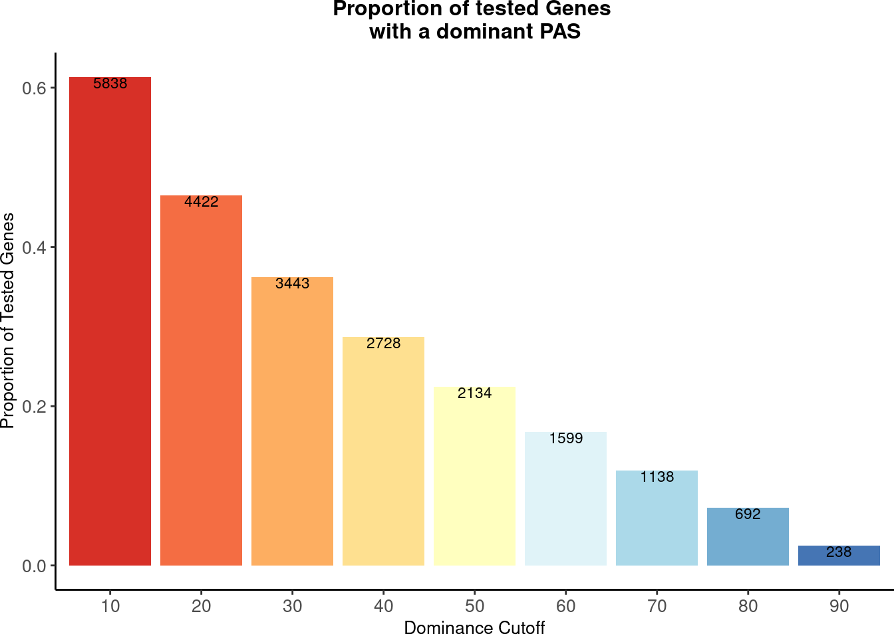
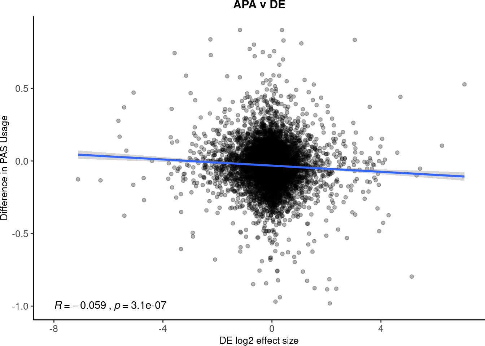
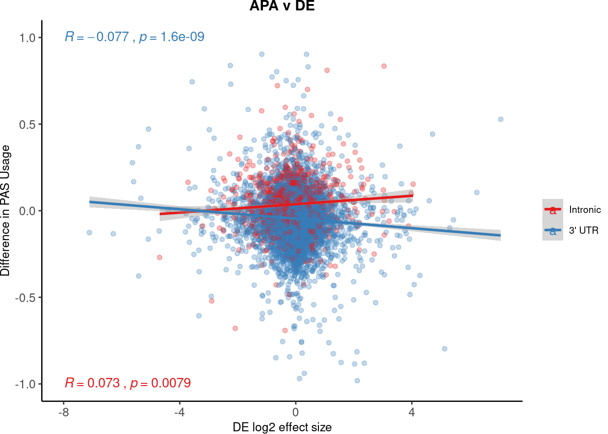
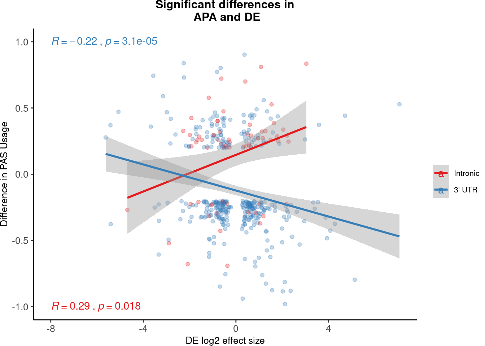
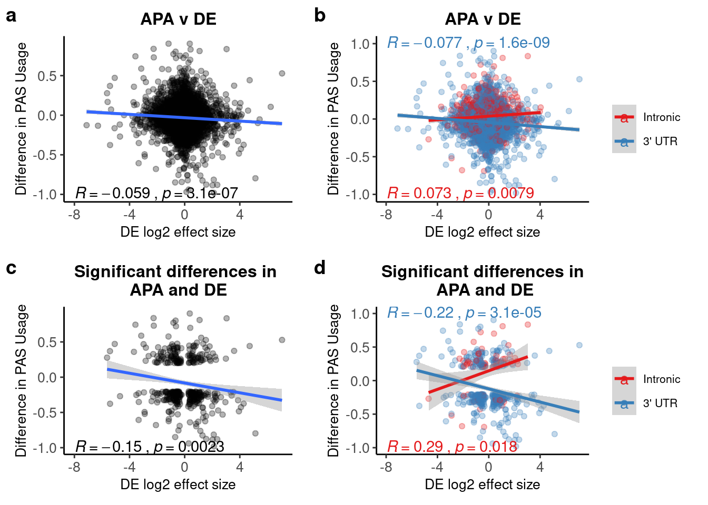
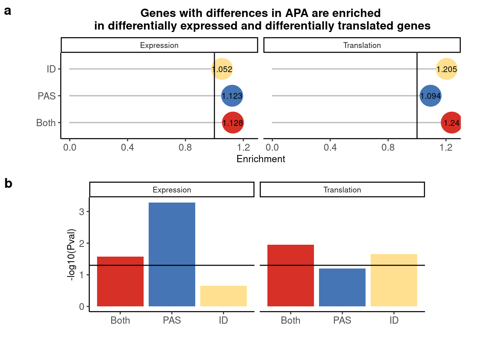
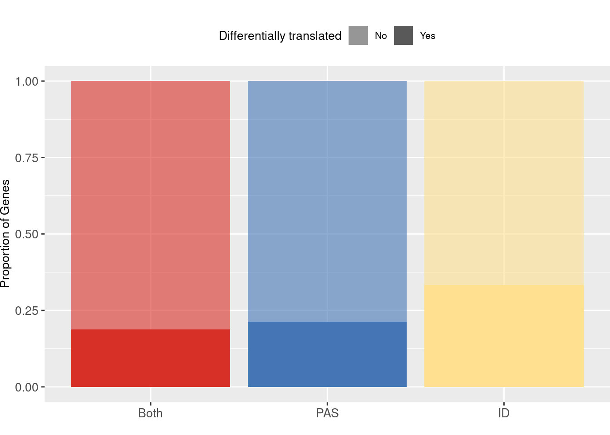

Main figures
Briana Mittleman
5/30/2020
Last updated: 2020-07-25
Checks: 7 0
Knit directory: Comparative_APA/analysis/
This reproducible R Markdown analysis was created with workflowr (version 1.6.2). The Checks tab describes the reproducibility checks that were applied when the results were created. The Past versions tab lists the development history.
Great! Since the R Markdown file has been committed to the Git repository, you know the exact version of the code that produced these results.
Great job! The global environment was empty. Objects defined in the global environment can affect the analysis in your R Markdown file in unknown ways. For reproduciblity it’s best to always run the code in an empty environment.
The command set.seed(20190902) was run prior to running the code in the R Markdown file. Setting a seed ensures that any results that rely on randomness, e.g. subsampling or permutations, are reproducible.
Great job! Recording the operating system, R version, and package versions is critical for reproducibility.
Nice! There were no cached chunks for this analysis, so you can be confident that you successfully produced the results during this run.
Great job! Using relative paths to the files within your workflowr project makes it easier to run your code on other machines.
Great! You are using Git for version control. Tracking code development and connecting the code version to the results is critical for reproducibility.
The results in this page were generated with repository version dc22f17. See the Past versions tab to see a history of the changes made to the R Markdown and HTML files.
Note that you need to be careful to ensure that all relevant files for the analysis have been committed to Git prior to generating the results (you can use wflow_publish or wflow_git_commit). workflowr only checks the R Markdown file, but you know if there are other scripts or data files that it depends on. Below is the status of the Git repository when the results were generated:
Ignored files:
Ignored: .DS_Store
Ignored: .Rhistory
Ignored: .Rproj.user/
Ignored: code/chimp_log/
Ignored: code/human_log/
Ignored: data/.DS_Store
Ignored: data/TrialFiltersMeta.txt.sb-9845453e-R58Y0Q/
Ignored: data/mediation_prot/
Ignored: data/metadata_HCpanel.txt.sb-284518db-RGf0kd/
Ignored: data/metadata_HCpanel.txt.sb-a5794dd2-i594qs/
Ignored: output/.DS_Store
Untracked files:
Untracked: ._.DS_Store
Untracked: Chimp/
Untracked: GEO/
Untracked: Human/
Untracked: analysis/ALUelements.Rmd
Untracked: analysis/AREstabilityScores.Rmd
Untracked: analysis/AllLoc_effectSizeCor.Rmd
Untracked: analysis/Conservation_bydAPAset.Rmd
Untracked: analysis/CrossChimpThreePrime.Rmd
Untracked: analysis/DiffTransProtvsExpression.Rmd
Untracked: analysis/DiffUsedUTR.Rmd
Untracked: analysis/GvizPlots.Rmd
Untracked: analysis/HandC.TvN
Untracked: analysis/PhenotypeOverlap10.Rmd
Untracked: analysis/ResultsNoUnlifted.md
Untracked: analysis/SuppTables.Rmd
Untracked: analysis/annotationBias.Rmd
Untracked: analysis/assessReadQual.Rmd
Untracked: analysis/diffExpressionPantro6.Rmd
Untracked: analysis/isoformdivandexp.Rmd
Untracked: code/._AlignmentScores.sh
Untracked: code/._BothFCMM.sh
Untracked: code/._BothFCMMPrim.sh
Untracked: code/._BothFCnewOInclusive.sh
Untracked: code/._ChimpStarMM2.sh
Untracked: code/._ClassifyLeafviz.sh
Untracked: code/._ClosestorthoEx.sh
Untracked: code/._Config_chimp.yaml
Untracked: code/._Config_chimp_full.yaml
Untracked: code/._Config_human.yaml
Untracked: code/._ConvertJunc2Bed.sh
Untracked: code/._CountNucleotides.py
Untracked: code/._CrossMapChimpRNA.sh
Untracked: code/._CrossMapThreeprime.sh
Untracked: code/._DiffSplice.sh
Untracked: code/._DiffSplicePlots.sh
Untracked: code/._DiffSplicePlots_gencode.sh
Untracked: code/._DiffSplice_gencode.sh
Untracked: code/._DiffSplice_removebad.sh
Untracked: code/._Filter255MM.sh
Untracked: code/._FilterPrimSec.sh
Untracked: code/._FindIntronForDomPAS.sh
Untracked: code/._FindIntronForDomPAS_DF.sh
Untracked: code/._GetMAPQscore.py
Untracked: code/._GetSecondaryMap.py
Untracked: code/._Lift5perPAS.sh
Untracked: code/._LiftFinalChimpJunc2Human.sh
Untracked: code/._LiftOrthoPAS2chimp.sh
Untracked: code/._MapBadSamples.sh
Untracked: code/._MismatchNumbers.sh
Untracked: code/._PAS_ATTAAA.sh
Untracked: code/._PAS_ATTAAA_df.sh
Untracked: code/._PAS_seqExpanded.sh
Untracked: code/._PASsequences.sh
Untracked: code/._PASsequences_DF.sh
Untracked: code/._PlotNuclearUsagebySpecies.R
Untracked: code/._PlotNuclearUsagebySpecies_DF.R
Untracked: code/._QuantMergedClusters.sh
Untracked: code/._RNATranscriptDTplot.sh
Untracked: code/._ReverseLiftFilter.R
Untracked: code/._RunFixLeafCluster.sh
Untracked: code/._RunNegMCMediation.sh
Untracked: code/._RunNegMCMediationDF.sh
Untracked: code/._RunPosMCMediationDF.err
Untracked: code/._RunPosMCMediationDF.sh
Untracked: code/._SAF2Bed.py
Untracked: code/._Snakefile
Untracked: code/._SnakefilePAS
Untracked: code/._SnakefilePASfilt
Untracked: code/._SortIndexBadSamples.sh
Untracked: code/._StarMM2.sh
Untracked: code/._TestFC.sh
Untracked: code/._assignPeak2Intronicregion
Untracked: code/._assignPeak2Intronicregion.sh
Untracked: code/._bed215upbed.py
Untracked: code/._bed2Bedbothstrand.py
Untracked: code/._bed2SAF_gen.py
Untracked: code/._buildIndecpantro5
Untracked: code/._buildIndecpantro5.sh
Untracked: code/._buildLeafviz.sh
Untracked: code/._buildLeafviz_leadAnno.sh
Untracked: code/._buildStarIndex.sh
Untracked: code/._chimpChromprder.sh
Untracked: code/._chimpMultiCov.sh
Untracked: code/._chimpMultiCov255.sh
Untracked: code/._chimpMultiCovInclusive.sh
Untracked: code/._chooseSignalSite.py
Untracked: code/._cleanbed2saf.py
Untracked: code/._cluster.json
Untracked: code/._cluster2bed.py
Untracked: code/._clusterLiftReverse.sh
Untracked: code/._clusterLiftReverse_removebad.sh
Untracked: code/._clusterLiftprimary.sh
Untracked: code/._clusterLiftprimary_removebad.sh
Untracked: code/._converBam2Junc.sh
Untracked: code/._converBam2Junc_removeBad.sh
Untracked: code/._extraSnakefiltpas
Untracked: code/._extractPhyloReg.py
Untracked: code/._extractPhyloRegGene.py
Untracked: code/._extractPhylopGeneral.ph
Untracked: code/._extractPhylopGeneral.py
Untracked: code/._extractPhylopReg200down.py
Untracked: code/._extractPhylopReg200up.py
Untracked: code/._filter5percPAS.py
Untracked: code/._filterNumChroms.py
Untracked: code/._filterPASforMP.py
Untracked: code/._filterPostLift.py
Untracked: code/._filterPrimaryread.py
Untracked: code/._filterSecondaryread.py
Untracked: code/._fixExonFC.py
Untracked: code/._fixFCheadforExp.py
Untracked: code/._fixLeafCluster.py
Untracked: code/._fixLiftedJunc.py
Untracked: code/._fixUTRexonanno.py
Untracked: code/._formathg38Anno.py
Untracked: code/._formatpantro6Anno.py
Untracked: code/._getRNAseqMapStats.sh
Untracked: code/._hg19MapStats.sh
Untracked: code/._humanChromorder.sh
Untracked: code/._humanMultiCov.sh
Untracked: code/._humanMultiCov255.sh
Untracked: code/._humanMultiCov_inclusive.sh
Untracked: code/._intersectLiftedPAS.sh
Untracked: code/._liftJunctionFiles.sh
Untracked: code/._liftPAS19to38.sh
Untracked: code/._liftedchimpJunc2human.sh
Untracked: code/._makeNuclearDapaplots.sh
Untracked: code/._makeNuclearDapaplots_DF.sh
Untracked: code/._makeSamplyGroupsHuman_TvN.py
Untracked: code/._mapRNAseqhg19.sh
Untracked: code/._mapRNAseqhg19_newPipeline.sh
Untracked: code/._maphg19.sh
Untracked: code/._maphg19_subjunc.sh
Untracked: code/._mediation_test.R
Untracked: code/._mergeChimp3prime_inhg38.sh
Untracked: code/._mergeandBWRNAseq.sh
Untracked: code/._mergedBam2BW.sh
Untracked: code/._nameClusters.py
Untracked: code/._negativeMediation_montecarlo.R
Untracked: code/._negativeMediation_montecarloDF.R
Untracked: code/._numMultimap.py
Untracked: code/._overlapMMandOrthoexon.sh
Untracked: code/._overlapPASandOrthoexon.sh
Untracked: code/._overlapapaQTLPAS.sh
Untracked: code/._parseHg38.py
Untracked: code/._postiveMediation_montecarlo_DF.R
Untracked: code/._prepareCleanLiftedFC_5perc4LC.py
Untracked: code/._prepareLeafvizAnno.sh
Untracked: code/._preparePAS4lift.py
Untracked: code/._primaryLift.sh
Untracked: code/._processhg38exons.py
Untracked: code/._quantJunc.sh
Untracked: code/._quantJunc_TEST.sh
Untracked: code/._quantJunc_removeBad.sh
Untracked: code/._quantLiftedPASPrimary.sh
Untracked: code/._quantMerged_seperatly.sh
Untracked: code/._recLiftchim2human.sh
Untracked: code/._revLiftPAShg38to19.sh
Untracked: code/._reverseLift.sh
Untracked: code/._runCheckReverseLift.sh
Untracked: code/._runChimpDiffIso.sh
Untracked: code/._runCountNucleotides.sh
Untracked: code/._runFilterNumChroms.sh
Untracked: code/._runHumanDiffIso.sh
Untracked: code/._runNuclearDiffIso_DF.sh
Untracked: code/._runNuclearDifffIso.sh
Untracked: code/._runTotalDiffIso.sh
Untracked: code/._run_chimpverifybam.sh
Untracked: code/._run_verifyBam.sh
Untracked: code/._snakemake.batch
Untracked: code/._snakemakePAS.batch
Untracked: code/._snakemakePASchimp.batch
Untracked: code/._snakemakePAShuman.batch
Untracked: code/._snakemake_chimp.batch
Untracked: code/._snakemake_human.batch
Untracked: code/._snakemakefiltPAS.batch
Untracked: code/._snakemakefiltPAS_chimp
Untracked: code/._snakemakefiltPAS_chimp.sh
Untracked: code/._snakemakefiltPAS_human.sh
Untracked: code/._spliceSite2Fasta.py
Untracked: code/._submit-snakemake-chimp.sh
Untracked: code/._submit-snakemake-human.sh
Untracked: code/._submit-snakemakePAS-chimp.sh
Untracked: code/._submit-snakemakePAS-human.sh
Untracked: code/._submit-snakemakefiltPAS-chimp.sh
Untracked: code/._submit-snakemakefiltPAS-human.sh
Untracked: code/._subset_diffisopheno_Nuclear_HvC.py
Untracked: code/._subset_diffisopheno_Nuclear_HvC_DF.py
Untracked: code/._subset_diffisopheno_Total_HvC.py
Untracked: code/._threeprimeOrthoFC.sh
Untracked: code/._transcriptDTplotsNuclear.sh
Untracked: code/._verifyBam4973.sh
Untracked: code/._verifyBam4973inHuman.sh
Untracked: code/._wrap_chimpverifybam.sh
Untracked: code/._wrap_verifyBam.sh
Untracked: code/._writeMergecode.py
Untracked: code/.snakemake/
Untracked: code/ALLPAS_sequenceDF.err
Untracked: code/ALLPAS_sequenceDF.out
Untracked: code/AlignmentScores.err
Untracked: code/AlignmentScores.out
Untracked: code/AlignmentScores.sh
Untracked: code/BothFCMM.err
Untracked: code/BothFCMM.out
Untracked: code/BothFCMM.sh
Untracked: code/BothFCMMPrim.err
Untracked: code/BothFCMMPrim.out
Untracked: code/BothFCMMPrim.sh
Untracked: code/BothFCnewOInclusive.sh
Untracked: code/BothFCnewOInclusive.sh.err
Untracked: code/BothFCnewOInclusive.sh.out
Untracked: code/ChimpStarMM2.err
Untracked: code/ChimpStarMM2.out
Untracked: code/ChimpStarMM2.sh
Untracked: code/ClassifyLeafviz.sh
Untracked: code/ClosestorthoEx.err
Untracked: code/ClosestorthoEx.out
Untracked: code/ClosestorthoEx.sh
Untracked: code/Config_chimp.yaml
Untracked: code/Config_chimp_full.yaml
Untracked: code/Config_human.yaml
Untracked: code/ConvertJunc2Bed.err
Untracked: code/ConvertJunc2Bed.out
Untracked: code/ConvertJunc2Bed.sh
Untracked: code/CountNucleotides.py
Untracked: code/CrossMapChimpRNA.sh
Untracked: code/CrossMapThreeprime.sh
Untracked: code/CrossmapChimp3prime.err
Untracked: code/CrossmapChimp3prime.out
Untracked: code/CrossmapChimpRNA.err
Untracked: code/CrossmapChimpRNA.out
Untracked: code/DTUTR.sh
Untracked: code/DiffDom_RNAmotif_4.err
Untracked: code/DiffDom_RNAmotif_4.out
Untracked: code/DiffDom_RNAmotif_4.sh
Untracked: code/DiffDom_RNAmotif_4_splitDE.err
Untracked: code/DiffDom_RNAmotif_4_splitDE.out
Untracked: code/DiffDom_RNAmotif_4_splitDE.sh
Untracked: code/DiffSplice.err
Untracked: code/DiffSplice.out
Untracked: code/DiffSplice.sh
Untracked: code/DiffSplicePlots.err
Untracked: code/DiffSplicePlots.out
Untracked: code/DiffSplicePlots.sh
Untracked: code/DiffSplicePlots_gencode.sh
Untracked: code/DiffSplice_gencode.sh
Untracked: code/DiffSplice_removebad.err
Untracked: code/DiffSplice_removebad.out
Untracked: code/DiffSplice_removebad.sh
Untracked: code/Filter255.err
Untracked: code/Filter255.out
Untracked: code/Filter255MM.sh
Untracked: code/FilterPrimSec.err
Untracked: code/FilterPrimSec.out
Untracked: code/FilterPrimSec.sh
Untracked: code/FilterReverseLift.err
Untracked: code/FilterReverseLift.out
Untracked: code/FindDomXCutoff.py
Untracked: code/FindIntronForDomPAS.err
Untracked: code/FindIntronForDomPAS.out
Untracked: code/FindIntronForDomPAS.sh
Untracked: code/FindIntronForDomPAS_DF.sh
Untracked: code/GencodeDiffSplice.err
Untracked: code/GencodeDiffSplice.out
Untracked: code/GetMAPQscore.py
Untracked: code/GetSecondaryMap.py
Untracked: code/GetTopminus2Usage.py
Untracked: code/H3K36me3DTplot.err
Untracked: code/H3K36me3DTplot.out
Untracked: code/H3K36me3DTplot.sh
Untracked: code/H3K36me3DTplot_DiffIso.err
Untracked: code/H3K36me3DTplot_DiffIso.out
Untracked: code/H3K36me3DTplot_DiffIso.sh
Untracked: code/H3K36me3DTplot_Specific.err
Untracked: code/H3K36me3DTplot_Specific.out
Untracked: code/H3K36me3DTplot_Specific.sh
Untracked: code/H3K36me3DTplot_distalPAS.err
Untracked: code/H3K36me3DTplot_distalPAS.out
Untracked: code/H3K36me3DTplot_distalPAS.sh
Untracked: code/H3K36me3DTplot_transcript.err
Untracked: code/H3K36me3DTplot_transcript.out
Untracked: code/H3K36me3DTplot_transcript.sh
Untracked: code/H3K36me3DTplotwide.err
Untracked: code/H3K36me3DTplotwide.out
Untracked: code/H3K36me3DTplotwide.sh
Untracked: code/H3K9me3DTplot_transcript.err
Untracked: code/H3K9me3DTplot_transcript.out
Untracked: code/H3K9me3DTplot_transcript.sh
Untracked: code/H3K9me3_processandDT.sh
Untracked: code/HchromOrder.err
Untracked: code/HchromOrder.out
Untracked: code/InfoContentShannon.py
Untracked: code/InfoContentbyInd.py
Untracked: code/IntersectMMandOrtho.err
Untracked: code/IntersectMMandOrtho.out
Untracked: code/IntersectPASandOrtho.err
Untracked: code/IntersectPASandOrtho.out
Untracked: code/JunctionLift.err
Untracked: code/JunctionLift.out
Untracked: code/JunctionLiftFinalChimp.err
Untracked: code/JunctionLiftFinalChimp.out
Untracked: code/Lift5perPAS.sh
Untracked: code/Lift5perPASbed.err
Untracked: code/Lift5perPASbed.out
Untracked: code/LiftClustersFirst.err
Untracked: code/LiftClustersFirst.out
Untracked: code/LiftClustersFirst_remove.err
Untracked: code/LiftClustersFirst_remove.out
Untracked: code/LiftClustersSecond.err
Untracked: code/LiftClustersSecond.out
Untracked: code/LiftClustersSecond_remove.err
Untracked: code/LiftClustersSecond_remove.out
Untracked: code/LiftFinalChimpJunc2Human.sh
Untracked: code/LiftOrthoPAS2chimp.sh
Untracked: code/LiftorthoPAS.err
Untracked: code/LiftorthoPASt.out
Untracked: code/Log.out
Untracked: code/MapBadSamples.err
Untracked: code/MapBadSamples.out
Untracked: code/MapBadSamples.sh
Untracked: code/MapStats.err
Untracked: code/MapStats.out
Untracked: code/MaxEntCode/
Untracked: code/MergeClusters.err
Untracked: code/MergeClusters.out
Untracked: code/MergeClusters.sh
Untracked: code/MismatchNumbers.err
Untracked: code/MismatchNumbers.out
Untracked: code/MismatchNumbers.sh
Untracked: code/NuclearDTUTR.err
Untracked: code/NuclearDTUTRt.out
Untracked: code/NuclearPlotsDEandDiffDom_4.err
Untracked: code/NuclearPlotsDEandDiffDom_4.out
Untracked: code/NuclearPlotsDEandDiffDom_4.sh
Untracked: code/PAS_ATTAAA.err
Untracked: code/PAS_ATTAAA.out
Untracked: code/PAS_ATTAAA.sh
Untracked: code/PAS_ATTAAADF.err
Untracked: code/PAS_ATTAAADF.out
Untracked: code/PAS_ATTAAA_df.sh
Untracked: code/PAS_seqExpanded.sh
Untracked: code/PAS_sequence.err
Untracked: code/PAS_sequence.out
Untracked: code/PAS_sequenceDF.err
Untracked: code/PAS_sequenceDF.out
Untracked: code/PASexpanded_sequenceDF.err
Untracked: code/PASexpanded_sequenceDF.out
Untracked: code/PASsequences.sh
Untracked: code/PASsequences_DF.sh
Untracked: code/PlotNuclearUsagebySpecies.R
Untracked: code/PlotNuclearUsagebySpecies_DF.R
Untracked: code/PlotNuclearUsagebySpecies_DF_4DIC.R
Untracked: code/PlotNuclearUsagebySpecies_DF_DEout.R
Untracked: code/QuantMergeClusters
Untracked: code/QuantMergeClusters.err
Untracked: code/QuantMergeClusters.out
Untracked: code/QuantMergedClusters.sh
Untracked: code/RNATranscriptDTplot.err
Untracked: code/RNATranscriptDTplot.out
Untracked: code/RNATranscriptDTplot.sh
Untracked: code/RNAmotif_PAS.err
Untracked: code/RNAmotif_PAS.out
Untracked: code/RNAmotif_PAS.sh
Untracked: code/RNAmotif_PAS_chimp.err
Untracked: code/RNAmotif_PAS_chimp.out
Untracked: code/RNAmotif_PAS_chimp.sh
Untracked: code/Rev_liftoverPAShg19to38.err
Untracked: code/Rev_liftoverPAShg19to38.out
Untracked: code/ReverseLiftFilter.R
Untracked: code/RunFixCluster.err
Untracked: code/RunFixCluster.out
Untracked: code/RunFixLeafCluster.sh
Untracked: code/RunNegMCMediation.err
Untracked: code/RunNegMCMediation.sh
Untracked: code/RunNegMCMediationDF.err
Untracked: code/RunNegMCMediationDF.out
Untracked: code/RunNegMCMediationDF.sh
Untracked: code/RunNegMCMediationr.out
Untracked: code/RunNewDom.err
Untracked: code/RunNewDom.out
Untracked: code/RunPosMCMediation.err
Untracked: code/RunPosMCMediation.sh
Untracked: code/RunPosMCMediationDF.err
Untracked: code/RunPosMCMediationDF.out
Untracked: code/RunPosMCMediationDF.sh
Untracked: code/RunPosMCMediationr.out
Untracked: code/SAF215upbed_gen.py
Untracked: code/SAF2Bed.py
Untracked: code/Snakefile
Untracked: code/SnakefilePAS
Untracked: code/SnakefilePASfilt
Untracked: code/SortIndexBadSamples.err
Untracked: code/SortIndexBadSamples.out
Untracked: code/SortIndexBadSamples.sh
Untracked: code/StarMM2.err
Untracked: code/StarMM2.out
Untracked: code/StarMM2.sh
Untracked: code/TestFC.err
Untracked: code/TestFC.out
Untracked: code/TestFC.sh
Untracked: code/TotalTranscriptDTplot.err
Untracked: code/TotalTranscriptDTplot.out
Untracked: code/UTR2FASTA.py
Untracked: code/Upstream10Bases_general.py
Untracked: code/allPASSeq_df.sh
Untracked: code/apaQTLsnake.err
Untracked: code/apaQTLsnake.out
Untracked: code/apaQTLsnakePAS.err
Untracked: code/apaQTLsnakePAS.out
Untracked: code/apaQTLsnakePAShuman.err
Untracked: code/apaQTLsnakefiltPAS.err
Untracked: code/apaQTLsnakefiltPAS.out
Untracked: code/assignPeak2Intronicregion.err
Untracked: code/assignPeak2Intronicregion.out
Untracked: code/assignPeak2Intronicregion.sh
Untracked: code/bam2junc.err
Untracked: code/bam2junc.out
Untracked: code/bam2junc_remove.err
Untracked: code/bam2junc_remove.out
Untracked: code/bed215upbed.py
Untracked: code/bed2Bedbothstrand.py
Untracked: code/bed2SAF_gen.py
Untracked: code/bed2saf.py
Untracked: code/bg_to_cov.py
Untracked: code/buildIndecpantro5
Untracked: code/buildIndecpantro5.sh
Untracked: code/buildLeafviz.err
Untracked: code/buildLeafviz.out
Untracked: code/buildLeafviz.sh
Untracked: code/buildLeafviz_leadAnno.sh
Untracked: code/buildLeafviz_leafanno.err
Untracked: code/buildLeafviz_leafanno.out
Untracked: code/buildStarIndex.sh
Untracked: code/callPeaksYL.py
Untracked: code/chimpChromprder.sh
Untracked: code/chimpMultiCov.err
Untracked: code/chimpMultiCov.out
Untracked: code/chimpMultiCov.sh
Untracked: code/chimpMultiCov255.sh
Untracked: code/chimpMultiCovInclusive.err
Untracked: code/chimpMultiCovInclusive.out
Untracked: code/chimpMultiCovInclusive.sh
Untracked: code/chooseAnno2Bed.py
Untracked: code/chooseAnno2SAF.py
Untracked: code/chooseSignalSite.py
Untracked: code/chromOrder.err
Untracked: code/chromOrder.out
Untracked: code/classifyLeafviz.err
Untracked: code/classifyLeafviz.out
Untracked: code/cleanbed2saf.py
Untracked: code/cluster.json
Untracked: code/cluster2bed.py
Untracked: code/clusterLiftReverse.sh
Untracked: code/clusterLiftReverse_removebad.sh
Untracked: code/clusterLiftprimary.sh
Untracked: code/clusterLiftprimary_removebad.sh
Untracked: code/clusterPAS.json
Untracked: code/clusterfiltPAS.json
Untracked: code/comands2Mege.sh
Untracked: code/converBam2Junc.sh
Untracked: code/converBam2Junc_removeBad.sh
Untracked: code/convertNumeric.py
Untracked: code/extraSnakefiltpas
Untracked: code/extractPhaastConGeneral.py
Untracked: code/extractPhyloReg.py
Untracked: code/extractPhyloRegGene.py
Untracked: code/extractPhylopGeneral.py
Untracked: code/extractPhylopReg200down.py
Untracked: code/extractPhylopReg200up.py
Untracked: code/filter5perc.R
Untracked: code/filter5percPAS.py
Untracked: code/filter5percPheno.py
Untracked: code/filterBamforMP.pysam2_gen.py
Untracked: code/filterJuncChroms.err
Untracked: code/filterJuncChroms.out
Untracked: code/filterMissprimingInNuc10_gen.py
Untracked: code/filterNumChroms.py
Untracked: code/filterPASforMP.py
Untracked: code/filterPostLift.py
Untracked: code/filterPrimaryread.py
Untracked: code/filterSAFforMP_gen.py
Untracked: code/filterSecondaryread.py
Untracked: code/filterSortBedbyCleanedBed_gen.R
Untracked: code/filterpeaks.py
Untracked: code/fixExonFC.py
Untracked: code/fixFChead.py
Untracked: code/fixFChead_bothfrac.py
Untracked: code/fixFCheadforExp.py
Untracked: code/fixLeafCluster.py
Untracked: code/fixLiftedJunc.py
Untracked: code/fixUTRexonanno.py
Untracked: code/formathg38Anno.py
Untracked: code/generateStarIndex.err
Untracked: code/generateStarIndex.out
Untracked: code/generateStarIndexHuman.err
Untracked: code/generateStarIndexHuman.out
Untracked: code/getAlloverlap.py
Untracked: code/getRNAseqMapStats.sh
Untracked: code/hg19MapStats.err
Untracked: code/hg19MapStats.out
Untracked: code/hg19MapStats.sh
Untracked: code/humanChromorder.sh
Untracked: code/humanFiles
Untracked: code/humanMultiCov.err
Untracked: code/humanMultiCov.out
Untracked: code/humanMultiCov.sh
Untracked: code/humanMultiCov255.err
Untracked: code/humanMultiCov255.out
Untracked: code/humanMultiCov255.sh
Untracked: code/humanMultiCovInclusive.err
Untracked: code/humanMultiCovInclusive.out
Untracked: code/humanMultiCov_inclusive.sh
Untracked: code/infoContentSimpson.py
Untracked: code/intersectAnno.err
Untracked: code/intersectAnno.out
Untracked: code/intersectAnnoExt.err
Untracked: code/intersectAnnoExt.out
Untracked: code/intersectLiftedPAS.sh
Untracked: code/leafcutter_merge_regtools_redo.py
Untracked: code/liftJunctionFiles.sh
Untracked: code/liftPAS19to38.sh
Untracked: code/liftVCF.out
Untracked: code/liftVCF.sh
Untracked: code/liftoverPAShg19to38.err
Untracked: code/liftoverPAShg19to38.out
Untracked: code/lliftVCF.err
Untracked: code/log/
Untracked: code/make5percPeakbed.py
Untracked: code/makeDIC.err
Untracked: code/makeDIC.out
Untracked: code/makeFileID.py
Untracked: code/makeNuclearDapaplots.sh
Untracked: code/makeNuclearDapaplots_DF.sh
Untracked: code/makeNuclearPlots.err
Untracked: code/makeNuclearPlots.out
Untracked: code/makeNuclearPlotsDF.err
Untracked: code/makeNuclearPlotsDF.out
Untracked: code/makePheno.py
Untracked: code/makeSamplyGroupsChimp_TvN.py
Untracked: code/makeSamplyGroupsHuman_TvN.py
Untracked: code/makedICPlots_DF.sh
Untracked: code/mapRNAseqhg19.sh
Untracked: code/mapRNAseqhg19_newPipeline.sh
Untracked: code/maphg19.err
Untracked: code/maphg19.out
Untracked: code/maphg19.sh
Untracked: code/maphg19_new.err
Untracked: code/maphg19_new.out
Untracked: code/maphg19_sub.err
Untracked: code/maphg19_sub.out
Untracked: code/maphg19_subjunc.sh
Untracked: code/mediation_test.R
Untracked: code/merge.err
Untracked: code/mergeChimp3prime_inhg38.sh
Untracked: code/mergeChimpRNA.sh
Untracked: code/merge_leafcutter_clusters_redo.py
Untracked: code/mergeandBWRNAseq.sh
Untracked: code/mergeandsort_ChimpinHuman.err
Untracked: code/mergeandsort_ChimpinHuman.out
Untracked: code/mergeandsort_H3K9me3
Untracked: code/mergeandsort_h3k36me3
Untracked: code/mergeandsorth3k36me3.sh
Untracked: code/mergedBam2BW.sh
Untracked: code/mergedbam2bw.err
Untracked: code/mergedbam2bw.out
Untracked: code/mergedbamRNAand2bw.err
Untracked: code/mergedbamRNAand2bw.out
Untracked: code/nameClusters.py
Untracked: code/namePeaks.py
Untracked: code/negativeMediation_montecarlo.R
Untracked: code/negativeMediation_montecarloDF.R
Untracked: code/nuclearTranscriptDTplot.err
Untracked: code/nuclearTranscriptDTplot.out
Untracked: code/numMultimap.py
Untracked: code/overlapMMandOrthoexon.sh
Untracked: code/overlapPAS.err
Untracked: code/overlapPAS.out
Untracked: code/overlapPASandOrthoexon.sh
Untracked: code/overlapapaQTLPAS.sh
Untracked: code/overlapapaQTLPAS_extended.sh
Untracked: code/overlapapaQTLPAS_samples.sh
Untracked: code/parseHg38.py
Untracked: code/peak2PAS.py
Untracked: code/pheno2countonly.R
Untracked: code/postiveMediation_montecarlo.R
Untracked: code/postiveMediation_montecarlo_DF.R
Untracked: code/prepareAnnoLeafviz.err
Untracked: code/prepareAnnoLeafviz.out
Untracked: code/prepareCleanLiftedFC_5perc4LC.py
Untracked: code/prepareLeafvizAnno.sh
Untracked: code/preparePAS4lift.py
Untracked: code/prepare_phenotype_table.py
Untracked: code/primaryLift.err
Untracked: code/primaryLift.out
Untracked: code/primaryLift.sh
Untracked: code/processhg38exons.py
Untracked: code/quantJunc.sh
Untracked: code/quantJunc_TEST.sh
Untracked: code/quantJunc_removeBad.sh
Untracked: code/quantLiftedPAS.err
Untracked: code/quantLiftedPAS.out
Untracked: code/quantLiftedPAS.sh
Untracked: code/quantLiftedPASPrimary.err
Untracked: code/quantLiftedPASPrimary.out
Untracked: code/quantLiftedPASPrimary.sh
Untracked: code/quatJunc.err
Untracked: code/quatJunc.out
Untracked: code/recChimpback2Human.err
Untracked: code/recChimpback2Human.out
Untracked: code/recLiftchim2human.sh
Untracked: code/revLift.err
Untracked: code/revLift.out
Untracked: code/revLiftPAShg38to19.sh
Untracked: code/reverseLift.sh
Untracked: code/runCheckReverseLift.sh
Untracked: code/runChimpDiffIso.sh
Untracked: code/runChimpDiffIsoDF.sh
Untracked: code/runCountNucleotides.err
Untracked: code/runCountNucleotides.out
Untracked: code/runCountNucleotides.sh
Untracked: code/runCountNucleotidesPantro6.err
Untracked: code/runCountNucleotidesPantro6.out
Untracked: code/runCountNucleotides_pantro6.sh
Untracked: code/runFilterNumChroms.sh
Untracked: code/runHumanDiffIso.sh
Untracked: code/runHumanDiffIsoDF.sh
Untracked: code/runNewDom.sh
Untracked: code/runNuclearDiffIso_DF.sh
Untracked: code/runNuclearDifffIso.sh
Untracked: code/runTotalDiffIso.sh
Untracked: code/run_Chimpleafcutter_ds.err
Untracked: code/run_Chimpleafcutter_ds.out
Untracked: code/run_Chimpverifybam.err
Untracked: code/run_Chimpverifybam.out
Untracked: code/run_Humanleafcutter_dF.err
Untracked: code/run_Humanleafcutter_dF.out
Untracked: code/run_Humanleafcutter_ds.err
Untracked: code/run_Humanleafcutter_ds.out
Untracked: code/run_Nuclearleafcutter_ds.err
Untracked: code/run_Nuclearleafcutter_ds.out
Untracked: code/run_Nuclearleafcutter_dsDF.err
Untracked: code/run_Nuclearleafcutter_dsDF.out
Untracked: code/run_Totalleafcutter_ds.err
Untracked: code/run_Totalleafcutter_ds.out
Untracked: code/run_chimpverifybam.sh
Untracked: code/run_verifyBam.sh
Untracked: code/run_verifybam.err
Untracked: code/run_verifybam.out
Untracked: code/slurm-62824013.out
Untracked: code/slurm-62825841.out
Untracked: code/slurm-62826116.out
Untracked: code/slurm-64108209.out
Untracked: code/slurm-64108521.out
Untracked: code/slurm-64108557.out
Untracked: code/snakePASChimp.err
Untracked: code/snakePASChimp.out
Untracked: code/snakePAShuman.out
Untracked: code/snakemake.batch
Untracked: code/snakemakeChimp.err
Untracked: code/snakemakeChimp.out
Untracked: code/snakemakeHuman.err
Untracked: code/snakemakeHuman.out
Untracked: code/snakemakePAS.batch
Untracked: code/snakemakePASFiltChimp.err
Untracked: code/snakemakePASFiltChimp.out
Untracked: code/snakemakePASFiltHuman.err
Untracked: code/snakemakePASFiltHuman.out
Untracked: code/snakemakePAS_Human.batch
Untracked: code/snakemakePASchimp.batch
Untracked: code/snakemakePAShuman.batch
Untracked: code/snakemake_chimp.batch
Untracked: code/snakemake_human.batch
Untracked: code/snakemakefiltPAS.batch
Untracked: code/snakemakefiltPAS_chimp.sh
Untracked: code/snakemakefiltPAS_human.batch
Untracked: code/snakemakefiltPAS_human.sh
Untracked: code/spliceSite2Fasta.py
Untracked: code/submit-snakemake-chimp.sh
Untracked: code/submit-snakemake-human.sh
Untracked: code/submit-snakemakePAS-chimp.sh
Untracked: code/submit-snakemakePAS-human.sh
Untracked: code/submit-snakemakefiltPAS-chimp.sh
Untracked: code/submit-snakemakefiltPAS-human.sh
Untracked: code/subset_diffisopheno.py
Untracked: code/subset_diffisopheno_Chimp_tvN.py
Untracked: code/subset_diffisopheno_Chimp_tvN_DF.py
Untracked: code/subset_diffisopheno_Huma_tvN.py
Untracked: code/subset_diffisopheno_Huma_tvN_DF.py
Untracked: code/subset_diffisopheno_Nuclear_HvC.py
Untracked: code/subset_diffisopheno_Nuclear_HvC_DF.py
Untracked: code/subset_diffisopheno_Total_HvC.py
Untracked: code/test
Untracked: code/test.txt
Untracked: code/threeprimeOrthoFC.out
Untracked: code/threeprimeOrthoFC.sh
Untracked: code/threeprimeOrthoFCcd.err
Untracked: code/transcriptDTplotsNuclear.sh
Untracked: code/transcriptDTplotsTotal.sh
Untracked: code/tripseq-analysis/
Untracked: code/verifyBam4973.sh
Untracked: code/verifyBam4973inHuman.sh
Untracked: code/verifybam4973.err
Untracked: code/verifybam4973.out
Untracked: code/verifybam4973HumanMap.err
Untracked: code/verifybam4973HumanMap.out
Untracked: code/wrap_Chimpverifybam.err
Untracked: code/wrap_Chimpverifybam.out
Untracked: code/wrap_chimpverifybam.sh
Untracked: code/wrap_verifyBam.sh
Untracked: code/wrap_verifybam.err
Untracked: code/wrap_verifybam.out
Untracked: code/writeMergecode.py
Untracked: data/._.DS_Store
Untracked: data/._HC_filenames.txt
Untracked: data/._HC_filenames.txt.sb-4426323c-IKIs0S
Untracked: data/._HC_filenames.xlsx
Untracked: data/._MapPantro6_meta.txt
Untracked: data/._MapPantro6_meta.txt.sb-a5794dd2-Cskmlm
Untracked: data/._MapPantro6_meta.xlsx
Untracked: data/._OppositeSpeciesMap.txt
Untracked: data/._OppositeSpeciesMap.txt.sb-a5794dd2-mayWJf
Untracked: data/._OppositeSpeciesMap.xlsx
Untracked: data/._RNASEQ_metadata.txt
Untracked: data/._RNASEQ_metadata.txt.sb-4426323c-TE4ns3
Untracked: data/._RNASEQ_metadata.txt.sb-51f67ae1-HXp7Gq
Untracked: data/._RNASEQ_metadata_2Removed.txt
Untracked: data/._RNASEQ_metadata_2Removed.txt.sb-4426323c-a4lBwx
Untracked: data/._RNASEQ_metadata_2Removed.xlsx
Untracked: data/._RNASEQ_metadata_stranded.txt
Untracked: data/._RNASEQ_metadata_stranded.txt.sb-a5794dd2-D659m2
Untracked: data/._RNASEQ_metadata_stranded.txt.sb-a5794dd2-ImNMoY
Untracked: data/._RNASEQ_metadata_stranded.txt.sb-e4bf31f0-ZGnGgl
Untracked: data/._RNASEQ_metadata_stranded.xlsx
Untracked: data/._TrialFiltersMeta.txt
Untracked: data/._TrialFiltersMeta.txt.sb-9845453e-R58Y0Q
Untracked: data/._metadata_HCpanel.txt
Untracked: data/._metadata_HCpanel.txt.sb-a3d92a2d-b9cYoF
Untracked: data/._metadata_HCpanel.txt.sb-a5794dd2-i594qs
Untracked: data/._metadata_HCpanel.txt.sb-f4823d1e-qihGek
Untracked: data/._metadata_HCpanel_frompantro5.xlsx
Untracked: data/._~$RNASEQ_metadata.xlsx
Untracked: data/._~$metadata_HCpanel.xlsx
Untracked: data/._.xlsx
Untracked: data/ALU/
Untracked: data/AREelements/
Untracked: data/BaseComp/
Untracked: data/CleanLiftedPeaks_FC_primary/
Untracked: data/CompapaQTLpas/
Untracked: data/DIC_Viz/
Untracked: data/DNDS/
Untracked: data/DTmatrix/
Untracked: data/DiffDomandDE_example/
Untracked: data/DiffExpression/
Untracked: data/DiffIso_Nuclear/
Untracked: data/DiffIso_Nuclear_DF/
Untracked: data/DiffIso_Total/
Untracked: data/DiffSplice/
Untracked: data/DiffSplice_liftedJunc/
Untracked: data/DiffSplice_removeBad/
Untracked: data/DifferentialPASUsageResults.txt
Untracked: data/DistTwoDom/
Untracked: data/DomDefGreaterX/
Untracked: data/DomStructure_4/
Untracked: data/DominantPAS/
Untracked: data/DominantPAS_DF/
Untracked: data/DoubleFilterUsageNumeric/
Untracked: data/EvalPantro5/
Untracked: data/H3K36me3/
Untracked: data/HC_filenames.txt
Untracked: data/HC_filenames.xlsx
Untracked: data/HumanMolPheno/
Untracked: data/HumanUTR/
Untracked: data/IndInfoContent/
Untracked: data/InfoContent/
Untracked: data/Khan_prot/
Untracked: data/Li_eqtls/
Untracked: data/MapPantro6_meta.txt
Untracked: data/MapPantro6_meta.xlsx
Untracked: data/MapStats/
Untracked: data/NormalizedClusters/
Untracked: data/NuclearHvC/
Untracked: data/NuclearHvC_DF/
Untracked: data/OppositeSpeciesMap.txt
Untracked: data/OppositeSpeciesMap.xlsx
Untracked: data/OrthoExonBed/
Untracked: data/OverlapBenchmark/
Untracked: data/OverlappingPAS/
Untracked: data/PAS/
Untracked: data/PAS_SAF/
Untracked: data/PAS_doubleFilter/
Untracked: data/PTM/
Untracked: data/Peaks_5perc/
Untracked: data/PhastCon/
Untracked: data/Pheno_5perc/
Untracked: data/Pheno_5perc_DF_nuclear/
Untracked: data/Pheno_5perc_nuclear/
Untracked: data/Pheno_5perc_nuclear_old/
Untracked: data/Pheno_5perc_total/
Untracked: data/PhyloP/
Untracked: data/Pol2Chip/
Untracked: data/QTLPASoverlap/
Untracked: data/RNASEQ_metadata.txt
Untracked: data/RNASEQ_metadata_2Removed.txt
Untracked: data/RNASEQ_metadata_2Removed.xlsx
Untracked: data/RNASEQ_metadata_stranded.txt
Untracked: data/RNASEQ_metadata_stranded.txt.sb-e4bf31f0-ZGnGgl/
Untracked: data/RNASEQ_metadata_stranded.xlsx
Untracked: data/SignalSites/
Untracked: data/SignalSites_doublefilter/
Untracked: data/SpliceSite/
Untracked: data/TestAnnoBiasOE/
Untracked: data/TestMM2/
Untracked: data/TestMM2_AS/
Untracked: data/TestMM2_PrimaryRead/
Untracked: data/TestMM2_SeondaryRead/
Untracked: data/TestMM2_mismatch/
Untracked: data/TestMM2_quality/
Untracked: data/TestWithinMergePAS/
Untracked: data/Test_FC_methods/
Untracked: data/Threeprime2Ortho/
Untracked: data/TotalFractionPAS/
Untracked: data/TotalHvC/
Untracked: data/TrialFiltersMeta.txt
Untracked: data/TwoBadSampleAnalysis/
Untracked: data/UnliftedSites/
Untracked: data/UrichElements/
Untracked: data/Wang_ribo/
Untracked: data/apaQTLGenes/
Untracked: data/bioGRID/
Untracked: data/chainFiles/
Untracked: data/cleanPeaks_anno/
Untracked: data/cleanPeaks_byspecies/
Untracked: data/cleanPeaks_lifted/
Untracked: data/files4viz_nuclear/
Untracked: data/files4viz_nuclear_DF/
Untracked: data/gsea/
Untracked: data/gviz/
Untracked: data/hypoxia/
Untracked: data/leafviz/
Untracked: data/liftover_files/
Untracked: data/mediation/
Untracked: data/mediation_DF/
Untracked: data/metadata_HCpanel.txt
Untracked: data/metadata_HCpanel.xlsx
Untracked: data/metadata_HCpanel_extra.txt
Untracked: data/metadata_HCpanel_frompantro5.txt
Untracked: data/metadata_HCpanel_frompantro5.xlsx
Untracked: data/miRNA/
Untracked: data/multimap/
Untracked: data/orthoUTR/
Untracked: data/paiDecay/
Untracked: data/primaryLift/
Untracked: data/reverseLift/
Untracked: data/testQuant/
Untracked: data/utrDB/
Untracked: data/~$RNASEQ_metadata.xlsx
Untracked: data/~$metadata_HCpanel.xlsx
Untracked: data/.xlsx
Untracked: output/._.DS_Store
Untracked: output/AUcount_density.pdf
Untracked: output/AUcount_density_sm.pdf
Untracked: output/DEandAPA.txt
Untracked: output/DEandAPA_sig.txt
Untracked: output/DEandTEeffectsize
Untracked: output/DEandTEeffectsize.pdf
Untracked: output/DEeffectsize
Untracked: output/DEeffectsize.pdf
Untracked: output/FigureDF/
Untracked: output/FigurePresColors/
Untracked: output/PropSamesdom
Untracked: output/PropSamesdom.pdf
Untracked: output/SupplementaryTable/
Untracked: output/TEeffectsize
Untracked: output/TEeffectsize.pdf
Untracked: output/Total_DEeffectsize
Untracked: output/Total_DEeffectsize.pdf
Untracked: output/Total_DEeffectsizeNotJusttop.pdf
Untracked: output/Total_DErelationship.pdf
Untracked: output/Total_TEeffectsize
Untracked: output/Total_TEeffectsize.pdf
Untracked: output/Ubiqplot
Untracked: output/Ubiqplot.pdf
Untracked: output/dAPAandDomEnrich.png
Untracked: output/dEandDomEnrich.png
Untracked: output/dediffdom.pdf
Untracked: output/dpnotDE
Untracked: output/dtPlots/
Untracked: output/exandte
Untracked: output/fig1.pdf
Untracked: output/fig2.pdf
Untracked: output/fig3.pdf
Untracked: output/fig4.pdf
Untracked: output/fig5.pdf
Untracked: output/fig6.pdf
Untracked: output/piecharts
Untracked: output/piecharts.pdf
Untracked: output/removeUnilift_fig6 copy.pdf
Untracked: output/removeUnilift_fig6.pdf
Untracked: output/removeUnlift_fig3.pdf
Untracked: output/removeUnlift_fig4.pdf
Untracked: output/removeUnlift_fig5.pdf
Untracked: output/simpson.pdf
Untracked: output/simpson_alTogether.pdf
Untracked: output/supplement/
Untracked: output/whichSiteplot.pdf
Untracked: projectNotes.Rmd
Untracked: proteinModelSet.Rmd
Unstaged changes:
Modified: analysis/DeandNumPAS.Rmd
Modified: analysis/DirSelectionKhan.Rmd
Modified: analysis/ExploredAPA.Rmd
Modified: analysis/ExploredAPA_DF.Rmd
Modified: analysis/MMExpreiment.Rmd
Modified: analysis/OppositeMap.Rmd
Modified: analysis/PTM_analysis.Rmd
Modified: analysis/ResultsNoUnlifted.Rmd
Modified: analysis/TotalDomStructure.Rmd
Modified: analysis/TotalVNuclearBothSpecies.Rmd
Modified: analysis/TryTripSeqAnalysis.Rmd
Modified: analysis/annotationInfo.Rmd
Modified: analysis/changeMisprimcut.Rmd
Modified: analysis/comp2apaQTLPAS.Rmd
Modified: analysis/correlationPhenos.Rmd
Modified: analysis/dInforContent.Rmd
Modified: analysis/df_QC.Rmd
Modified: analysis/diffExpression.Rmd
Modified: analysis/establishCutoffs.Rmd
Modified: analysis/incorporateQTLsAncestral.Rmd
Modified: analysis/index.Rmd
Modified: analysis/infoContent.Rmd
Modified: analysis/investigatePantro5.Rmd
Modified: analysis/mRNADecay.Rmd
Modified: analysis/miRNAanalysis.Rmd
Modified: analysis/multiMap.Rmd
Modified: analysis/phastCon.Rmd
Modified: analysis/pol2.Rmd
Modified: analysis/speciesSpecific.Rmd
Note that any generated files, e.g. HTML, png, CSS, etc., are not included in this status report because it is ok for generated content to have uncommitted changes.
These are the previous versions of the repository in which changes were made to the R Markdown (analysis/mainFigures.Rmd) and HTML (docs/mainFigures.html) files. If you’ve configured a remote Git repository (see ?wflow_git_remote), click on the hyperlinks in the table below to view the files as they were in that past version.
| File | Version | Author | Date | Message |
|---|---|---|---|---|
| Rmd | dc22f17 | brimittleman | 2020-07-25 | edits for manuscrit updates 7.25 |
| html | 8cf8116 | brimittleman | 2020-06-30 | Build site. |
| Rmd | 40aae53 | brimittleman | 2020-06-30 | fix main fig typos |
| html | f31a5a0 | brimittleman | 2020-06-26 | Build site. |
| Rmd | eeccce8 | brimittleman | 2020-06-26 | remore last 3 |
| html | 6c4190e | brimittleman | 2020-06-11 | Build site. |
| Rmd | faf8902 | brimittleman | 2020-06-11 | fix typos |
| html | a438fc1 | brimittleman | 2020-05-31 | Build site. |
| Rmd | 2c88fe0 | brimittleman | 2020-05-31 | fig 5 and 6 |
| html | c1c2047 | brimittleman | 2020-05-31 | Build site. |
| Rmd | 033290c | brimittleman | 2020-05-31 | add main figures 1-4 |
I would like to plot all of the main figures in one R markdown with cowplot. I will save the data frames in the other files as rds objects then load them here.
library(cowplot)
********************************************************Note: As of version 1.0.0, cowplot does not change the default ggplot2 theme anymore. To recover the previous behavior, execute:
theme_set(theme_cowplot())********************************************************library(tidyverse)── Attaching packages ───────────────────────────────────────────────────────────────────────────── tidyverse 1.3.0 ──✔ ggplot2 3.2.1 ✔ purrr 0.3.4
✔ tibble 2.1.3 ✔ dplyr 0.8.3
✔ tidyr 1.1.0 ✔ stringr 1.4.0
✔ readr 1.3.1 ✔ forcats 0.4.0── Conflicts ──────────────────────────────────────────────────────────────────────────────── tidyverse_conflicts() ──
✖ dplyr::filter() masks stats::filter()
✖ dplyr::lag() masks stats::lag()library(ggpubr)
Attaching package: 'ggpubr'The following object is masked from 'package:cowplot':
get_legendmkdir ../output/FigureDFFigure1
1A- location pic charts
fig1A_data=read.table("../output/FigureDF/nPAS_figure1.txt", header = T, stringsAsFactors = F)
fig1A_data$species <- factor(fig1A_data$species, labels = c("Chimpanzee~PAS", "Human~PAS"))
fig1A=ggplot(fig1A_data,aes(x="",y=prop, fill=loc)) + geom_bar(stat="identity",width=1, color="white")+ coord_polar("y", start=0) +theme_void() + facet_wrap(~species,labeller = label_parsed,strip.position = "left") + scale_fill_brewer(palette = "RdYlBu", name="Genic Location", labels=c("Coding", "5KB downstream", "Intronic","3' UTR", "5' UTR")) + theme(legend.position = "bottom",strip.text = element_text(size = 10, face = "italic",angle=270), text=element_text(size=10),plot.title = element_text(hjust = 0.5, face="bold"),plot.margin = unit(c(0,0,0,0), "cm")) +labs(title="PAS genic locations are conserved between species", x="", y="")
fig1A
fig1B_data=read.table("../output/FigureDF/SeqConservation.txt",header = T,stringsAsFactors = F)
fig1B=ggplot(fig1B_data, aes(x=Set, by=Set, fill=region, y=PhyloP)) + geom_boxplot(notch = T) + scale_fill_brewer(palette = "RdYlBu") + scale_x_discrete(labels=c("-600", "-400", "-200", '0','200','400','600')) + labs(x="Basepairs", title="PAS are more conserved \nthan surrounding regions") + guides(fill = FALSE) + theme_classic()+ theme(plot.title = element_text(hjust = 0.5, face="bold"), axis.text.x = element_text(size=10),axis.text.y = element_text(size=10),text=element_text(size=10),plot.margin = unit(c(0,0,0,0), "cm"))
fig1B
Figure 1C:
fig1c_data=read.table("../output/FigureDF/SignalSizeFigure.txt", header = T, stringsAsFactors = F)
fic1c=ggplot(fig1c_data, aes(y=propSS,by=Species,fill=Species,x=reorder(SS, -propSS))) + geom_bar(stat="identity", position = "dodge") + theme_classic() +theme(axis.text.x = element_text(size=10,angle = 90),plot.title = element_text(hjust = 0.5, face="bold"),axis.text.y = element_text(size=10),text=element_text(size=10), legend.position = "top",plot.margin = unit(c(0,0,0,0), "cm")) + scale_fill_brewer(palette = "Dark2", label=c("Chimp", "Human")) + labs(y="Proportion of PAS",title="Proportion of PAS with a signal site", x="")figure 1 :
row2=plot_grid(fig1B,fic1c, labels=c("b","c"), scale = c(.9,.9), nrow = 1)
fig1all=plot_grid(fig1A,row2, labels = c("a", ""),nrow = 2,rel_heights=c(.75,1 ),hjust=-12)
fig1all
pdf("../output/fig1.pdf", height=6, width=8)
fig1all
dev.off()png
2 Figure 2:
Pie charts for differences
PASlevel= read.table("../output/FigureDF/PASlevelDiff.txt", stringsAsFactors = F, header=T,col.names =c("sig", "n","gene","prop")) %>% mutate(set="PAS", test=c("Conserved", "Not Tested", "Divergent"))
genelevel= read.table("../output/FigureDF/GenelevelDiff.txt", stringsAsFactors = F, header = T, col.names =c("sig", "n","gene","prop")) %>% mutate(set="gene", test=c("Conserved", "Not Tested", "Divergent"))
isoformlevel= read.table("../output/FigureDF/IsoformlevelDiff.txt", stringsAsFactors = F, header = T, col.names =c("sig", "n","gene","prop")) %>% mutate(set="isoform",test=c("Conserved", "Not Tested", "Divergent"))
fig2a=PASlevel %>% bind_rows(genelevel) %>% bind_rows(isoformlevel)
fig2a$set=factor(fig2a$set, levels=c("PAS", "gene", "isoform"),labels = c("PAS~Differences", "Genes~with~PAS~Differneces", "Differences~isoform~diversity"))
fig2a$test=factor(fig2a$test,levels= c("Conserved", "Divergent","Not Tested"))
useCOl <- c("#d73027", "#4575b4","#fee090")
fig2aplot=ggplot(fig2a,aes(by=test, y=prop, x="", fill=test)) + geom_bar(stat="identity",width=1, color="white")+ coord_polar("y", start=0) +theme_void() + scale_fill_manual(values=useCOl,name="") + facet_wrap(~set,labeller = label_parsed,strip.position = "left") + theme(legend.position = "bottom",strip.text = element_text(size = 10, angle=270), text=element_text(size=10),plot.title = element_text(hjust = 0.5, face="bold",size=12)) + labs(title="APA is functionally conserved at PAS and isoform diversity levels")Dominance plots
fig2cd_data=read.table("../output/FigureDF/DominantPAS.txt", header = T, stringsAsFactors = F)
fig2cd_data$cut=as.factor(fig2cd_data$cut)
fig2d=ggplot(fig2cd_data,aes(x=cut,y=PropSame,fill=cut)) + geom_bar(stat="identity") +geom_text(aes(label=nDom), position=position_dodge(width=0.9), vjust=1,size=3)+ scale_fill_brewer(palette = "RdYlBu")+theme_classic()+theme(legend.position = "none",text=element_text(size=10),plot.title = element_text(hjust = 0.5, face="bold",size=12),axis.text.y = element_text(size=10),axis.text.x = element_text(size=10),plot.margin = unit(c(0,0,0,0), "cm")) + labs(title="Most genes with a dominant PAS\n share the same dominant PAS", y="Proportion of Genes in Set", x="Dominance Cutoff")
fig2d
fig2c=ggplot(fig2cd_data,aes(x=cut,y=PropDom,fill=cut)) + geom_bar(stat="identity") +geom_text(aes(label=nDom), position=position_dodge(width=0.9), vjust=1, size=3) + scale_fill_brewer(palette = "RdYlBu")+theme_classic()+theme(legend.position = "none",text=element_text(size=10),plot.title = element_text(hjust = 0.5, face="bold",size=12),axis.text.y = element_text(size=10),axis.text.x = element_text(size=10),plot.margin = unit(c(0,0,0,0), "cm")) + labs(title="Proportion of tested Genes \nwith a dominant PAS", y="Proportion of Tested Genes", x="Dominance Cutoff")
fig2c
fig2row2=plot_grid(fig2c,fig2d, labels=c("b","c"), scale = c(.9,.9), nrow = 1)
fig2=plot_grid(fig2aplot,fig2row2, nrow = 2,labels = c("a",""),rel_heights=c(.8,1 ),hjust=-5)
fig2
pdf("../output/fig2.pdf", height=6, width=8)
fig2
dev.off()png
2 figure 3
fig3_data=read.table("../output/DEandAPA.txt", header = T, stringsAsFactors = F)
fig3_data2=read.table("../output/DEandAPA_sig.txt", header = T, stringsAsFactors = F)fig3a=ggplot(fig3_data,aes(y=deltaPAU, x=CorrectedlogFC)) + geom_point(alpha=.3) + geom_smooth(method="lm") + labs(title="APA v DE", x="DE log effect size", y="Difference in PAS Usage") + scale_color_brewer(palette = "Set1",name="", labels=c("Intronic", "3' UTR"))+ stat_cor(label.x = -8,label.y = -1) +theme_classic() + theme(text=element_text(size=10),plot.title = element_text(hjust = 0.5, face="bold",size=12),axis.text.y = element_text(size=10),axis.text.x = element_text(size=10),plot.margin = unit(c(0,0,0,0), "cm"))
fig3a
fig3b=ggplot(fig3_data,aes(y=deltaPAU, x=CorrectedlogFC, col=loc)) + geom_point(alpha=.3) + geom_smooth(aes(col=loc),method="lm") + labs(title="APA v DE", x="DE log effect size", y="Difference in PAS Usage") + scale_color_brewer(palette = "Set1",name="", labels=c("Intronic", "3' UTR"))+ stat_cor(aes(col=loc),label.x = -8,label.y = c(-1,1)) +theme_classic() + theme(legend.position = "right",text=element_text(size=10),plot.title = element_text(hjust = 0.5, face="bold",size=12),axis.text.y = element_text(size=10),axis.text.x = element_text(size=10),plot.margin = unit(c(0,0,0,0), "cm"))
fig3b
fig3c=ggplot(fig3_data2,aes(y=deltaPAU, x=CorrectedlogFC)) + geom_point(alpha=.3) + geom_smooth(method="lm") + labs(title="Significant differences in \nAPA and DE", x="DE log effect size", y="Difference in PAS Usage") + scale_color_brewer(palette = "Set1",name="", labels=c("Intronic", "3' UTR"))+ stat_cor(label.x = -8,label.y = -1)+theme_classic()+ theme(legend.position = "top",text=element_text(size=10),plot.title = element_text(hjust = 0.5, face="bold",size=12),axis.text.y = element_text(size=10),axis.text.x = element_text(size=10),plot.margin = unit(c(0,0,0,0), "cm"))
fig3c
fig3d=ggplot(fig3_data2,aes(y=deltaPAU, x=CorrectedlogFC, col=loc)) + geom_point(alpha=.3) + geom_smooth(aes(col=loc),method="lm") + labs(title="Significant differences in\n APA and DE", x="DE log effect size", y="Difference in PAS Usage") + scale_color_brewer(palette = "Set1",name="", labels=c("Intronic", "3' UTR"))+ stat_cor(aes(col=loc),label.x = -8,label.y = c(-1,1))+theme_classic()+ theme(legend.position = "right",text=element_text(size=10),plot.title = element_text(hjust = 0.5, face="bold",size=12),axis.text.y = element_text(size=10),axis.text.x = element_text(size=10),plot.margin = unit(c(0,0,0,0), "cm") )
fig3d
fig3=plot_grid(fig3a, fig3b,fig3c,fig3d, scale = c(.9,.9,.9,.9), labels=c("a","b","c","d"),rel_widths=c(1,1.3,1,1.3))
fig3
pdf("../output/fig3.pdf", height=8, width=8)
fig3
dev.off()png
2 figure 5
fig4Data=read.table("../output/FigureDF/DEandTEenrich.txt", header = T, stringsAsFactors = F)
fig4Data$Pval=as.numeric(fig4Data$Pval)
fig4Data$Enrichment=as.numeric(fig4Data$Enrichment)
fig4Data$Pheno=factor(fig4Data$Pheno, levels=c("Expression", "Translation", "Protein"))figure4a=ggplot(fig4Data,aes(x=sets,col=sets,y=Enrichment,label = round(Enrichment,3)))+ geom_bar(stat="identity",color="grey",aes(y=fig4Data$Enrichment),width=.01)+geom_point(size=10) + coord_flip() + geom_hline(yintercept = 1) + facet_grid(~Pheno)+scale_color_manual(values=useCOl) + labs( title="Genes with differences in APA are enriched\n in differentially expression and differentially translated genes",x="", y="Enrichment")+geom_text(color = "black", size = 3) +scale_x_discrete(labels=c(Both="Both", OnlyAPA="PAS",OnlyIC= "ID"))+ theme_classic()+theme(legend.position = "none", text=element_text(size=10),plot.title = element_text(hjust = 0.5, face="bold",size=12),axis.text.y = element_text(size=10),axis.text.x = element_text(size=10),plot.margin = unit(c(0,0,0,0), "cm"))
figure4a
figure4b=ggplot(fig4Data,aes(x=sets, y=-log10(Pval),fill=sets)) +geom_bar(stat = "identity",position = "dodge") +geom_hline(yintercept =1.3)+ labs(x="")+scale_x_discrete(labels=c(Both="Both", OnlyAPA="PAS",OnlyIC= "ID"))+ scale_fill_manual(values=useCOl,labels=c("Both", "PAS Level", "Isoform Diversity"), name="")+facet_wrap(~Pheno)+ theme_classic()+ theme(legend.position = "none",text=element_text(size=10),plot.title = element_text(hjust = 0.5, face="bold",size=12),axis.text.y = element_text(size=10),axis.text.x = element_text(size=10),plot.margin = unit(c(0,0,0,0), "cm"))
figure4b
row2fig4=plot_grid(NULL, figure4b,NULL, rel_widths=c(0.12,1,.1), nrow = 1 )
fig4=plot_grid(figure4a,row2fig4,nrow =2, scale = c(.9,.9),labels = c("a","b"))
fig4
pdf("../output/fig5.pdf", height=6, width=8,useKerning=F)
fig4
dev.off()png
2 figure 5
fig5data=read.table("../output/FigureDF/SameDiffDomEnrichinDE.txt",header = T, stringsAsFactors = F)
fig5data$set=as.factor(fig5data$set)
fig5a=ggplot(fig5data,aes(x=set,group=type,col=set,y=Enrich))+ geom_bar(stat="identity",col="grey",alpha=.3,width=.01)+geom_point(size=10) + coord_flip()+ geom_hline(yintercept = 1) +scale_color_brewer(palette="RdYlBu")+geom_text(col="black",aes(label = round(Enrich,2)))+ facet_grid(~type)+labs(x="Dominance Cutoff", y="Enrichment",title="Enrichment for differentially expressed genes in genes\n with the same and different dominant PAS") + theme_classic()+ theme(legend.position = "none", text=element_text(size=10),plot.title = element_text(hjust = 0.5, face="bold",size=12),axis.text.y = element_text(size=10),axis.text.x = element_text(size=10),plot.margin = unit(c(0,0,0,0), "cm"))
fig5a
fig5b=ggplot(fig5data,aes(x=set, y=-log10(Pval),fill=set)) + geom_bar(stat="identity") +labs(title="",x="Dominance Cutoff")+ scale_fill_brewer(palette = "RdYlBu") + theme(legend.position = "none")+ geom_hline(yintercept = 1.30103) + facet_grid(~type)+ theme_classic()+ theme(legend.position = "none", text=element_text(size=10),plot.title = element_text(hjust = 0.5, face="bold",size=10),axis.text.y = element_text(size=10),axis.text.x = element_text(size=10),plot.margin = unit(c(0,0,0,0), "cm"))
fig5b
fig5=plot_grid(fig5a,fig5b,nrow = 2,scale = c(.9,.9),labels = c("a","b"), rel_heights = c(1,.8))
fig5
pdf("../output/fig4.pdf", height=7, width=7,useKerning=F)
fig5
dev.off()png
2 fig 6
fig6topdata=read.table("../output/FigureDF/DPnotDE.txt",header = T, stringsAsFactors = F)
fig6middata=read.table("../output/FigureDF/DPnotDE_trans.txt",header = T, stringsAsFactors = F)
fig6dapa=read.table("../output/FigureDF/PinteractiondAPA.txt",header = T, stringsAsFactors = F)
fig6both=read.table("../output/FigureDF/Pinteractionboth.txt",header = T, stringsAsFactors = F)
fib6ic=read.table("../output/FigureDF/PinteractiondIC.txt",header = T, stringsAsFactors = F)fig6a=ggplot(fig6topdata,aes(x=Set, fill=Set, y=Number))+ geom_bar(stat="identity")+ scale_fill_manual(values=useCOl)+geom_text(aes(label=Number), position=position_dodge(width=0.9), vjust=2)+ labs(title="Number of genes differentially expressed\n in protein but not mRNA", y="Number of Genes",x="")+scale_x_discrete(labels=c(Both="Both", OnlyAPA="PAS",OnlydIC= "ID"))+ theme_classic()+theme(legend.position = "none", text=element_text(size=10),plot.title = element_text(hjust = 0.5, face="bold",size=10),axis.text.y = element_text(size=10),axis.text.x = element_text(size=10),plot.margin = unit(c(0,0,0,0), "cm"))
fig6a
fig6b=ggplot(fig6topdata,aes(x=Set, fill=Set, y=Prop))+ geom_bar(stat="identity")+ scale_fill_manual(values=useCOl) + labs(title="Proportions of genes differentially expressed\n in protein but not mRNA", y="Proportion of Genes",x="")+geom_text(aes(label=round(Prop,3)), position=position_dodge(width=0.9), vjust=2) +scale_x_discrete(labels=c(Both="Both", OnlyAPA="PAS",OnlydIC= "ID"))+ theme_classic()+theme(legend.position = "none", text=element_text(size=10),plot.title = element_text(hjust = 0.5, face="bold",size=10),axis.text.y = element_text(size=10),axis.text.x = element_text(size=10),plot.margin = unit(c(0,0,0,0), "cm"))
fig6b
fig6c= ggplot(fig6middata, aes(x=set,by=dTE, y=ndTE,fill=set, alpha=dTE)) +geom_bar(stat="identity", position = "dodge") + labs(title="", y="Number of Genes",x="") + scale_fill_manual(values = useCOl ) + scale_alpha_manual(values=c(.6, 1),name="Differentially translated") + geom_text(aes(label=ndTE), position=position_dodge(width=0.9), vjust=1)+guides(fill = FALSE)+scale_x_discrete(labels=c(Both="Both", OnlyAPA="PAS",OnlyIC= "ID"))+theme_classic()+ theme(legend.position = "top", legend.justification = "center", text=element_text(size=10),plot.title = element_text(hjust = 0.5, face="bold",size=10),axis.text.y = element_text(size=10),axis.text.x = element_text(size=10),plot.margin = unit(c(0,0,0,0), "cm"))
fig6c
fig6d=ggplot(fig6middata, aes(x=set,by=dTE, y=ndTE,fill=set, alpha=dTE)) +geom_bar(stat="identity", position = "fill") + labs(title="", y="Proportion of Genes",x="") + scale_fill_manual(values = useCOl ) + scale_alpha_manual(values=c(.6, 1),name="Differentially translated") + guides(fill = FALSE)+scale_x_discrete(labels=c(Both="Both", OnlyAPA="PAS",OnlyIC= "ID"))+ theme(legend.position = "top",legend.justification = "center", text=element_text(size=10),plot.title = element_text(hjust = 0.5, face="bold",size=10),axis.text.y = element_text(size=10),axis.text.x = element_text(size=10),plot.margin = unit(c(0,0,0,0), "cm"))
fig6d
#fig6e=ggplot(fig6both,aes(x=dPnotDE, y=log10(NormInter),fill=dPnotDE)) + geom_boxplot(notch = T) + stat_compare_means( label.x = 1.25, label.y = 1.5) + scale_fill_manual(values = c("grey", "#d73027"))+ labs(x="Differentally expressed in protein \n not in mRNA", y="log10(Interaction)", title="") + theme_classic() + theme(axis.text.x=element_text(angle=90, hjust=0, size = 10), text= element_text(size=10), legend.position = "none",plot.title = element_text(hjust = 0.5, face="bold",size=10),axis.text.y = element_text(size=10),plot.margin = unit(c(0,0,0,0), "cm"))
#fig6e
#fig6f=ggplot(fig6dapa,aes(x=dPnotDE, y=log10(NormInter),fill=dPnotDE)) + geom_boxplot(notch = T) + stat_compare_means( label.x = 1.25, label.y = 1.5) + scale_fill_manual(values = c("grey", "#4575b4")) + labs(x="Differentally expressed in protein \n not in mRNA", y="log10(Interaction)", title="") + theme_classic() + theme(axis.text.x=element_text(angle=90, hjust=0, size = 10), text= element_text(size=10), legend.position = "none",plot.title = element_text(hjust = 0.5, face="bold",size=10),axis.text.y = element_text(size=10),plot.margin = unit(c(0,0,0,0), "cm"))
#fig6f
#fig6g=ggplot(fib6ic,aes(x=dPnotDE, y=log10(NormInter),fill=dPnotDE)) + geom_boxplot(notch = T) + stat_compare_means( label.x = 1.25, label.y = 1.5) + scale_fill_manual(values = c("grey", "#fee090")) + labs(x="Differentally expressed in protein \n not in mRNA", y="log10(Interaction)", title="") + theme_classic() + theme(axis.text.x=element_text(angle=90, hjust=0, size = 10), text= element_text(size=10), legend.position = "none",plot.title = element_text(hjust = 0.5, face="bold",size=10),axis.text.y = element_text(size=10),plot.margin = unit(c(0,0,0,0), "cm"))
#fig6gfig6top=plot_grid(fig6a,fig6b, labels = c("a","b"), scale = c(.9,.9),nrow = 1)
fig6mid=plot_grid(fig6c,fig6d, labels = c("c","d"), scale = c(.9,.9),nrow = 1)
#fig6botom=plot_grid(fig6e,fig6f, fig6g, labels = c("e","f","g"), scale = c(.9,.9,.9),nrow = 1)
fig6=plot_grid(fig6top,fig6mid,nrow = 2, rel_heights = c(1,1))
fig6
pdf("../output/fig6.pdf", height=8, width=8,useKerning=F)
fig6
dev.off()png
2 Draft July 25 switch figure 4 and 5
sessionInfo()R version 3.6.1 (2019-07-05)
Platform: x86_64-pc-linux-gnu (64-bit)
Running under: Scientific Linux 7.4 (Nitrogen)
Matrix products: default
BLAS/LAPACK: /software/openblas-0.2.19-el7-x86_64/lib/libopenblas_haswellp-r0.2.19.so
locale:
[1] LC_CTYPE=en_US.UTF-8 LC_NUMERIC=C
[3] LC_TIME=en_US.UTF-8 LC_COLLATE=en_US.UTF-8
[5] LC_MONETARY=en_US.UTF-8 LC_MESSAGES=en_US.UTF-8
[7] LC_PAPER=en_US.UTF-8 LC_NAME=C
[9] LC_ADDRESS=C LC_TELEPHONE=C
[11] LC_MEASUREMENT=en_US.UTF-8 LC_IDENTIFICATION=C
attached base packages:
[1] stats graphics grDevices utils datasets methods base
other attached packages:
[1] ggpubr_0.3.0 forcats_0.4.0 stringr_1.4.0 dplyr_0.8.3
[5] purrr_0.3.4 readr_1.3.1 tidyr_1.1.0 tibble_2.1.3
[9] ggplot2_3.2.1 tidyverse_1.3.0 cowplot_1.0.0
loaded via a namespace (and not attached):
[1] Rcpp_1.0.3 lubridate_1.7.4 lattice_0.20-38
[4] assertthat_0.2.1 rprojroot_1.3-2 digest_0.6.20
[7] plyr_1.8.4 R6_2.4.0 cellranger_1.1.0
[10] backports_1.1.4 reprex_0.3.0 evaluate_0.14
[13] httr_1.4.1 pillar_1.4.2 rlang_0.4.6
[16] lazyeval_0.2.2 curl_3.3 readxl_1.3.1
[19] data.table_1.12.8 rstudioapi_0.10 whisker_0.3-2
[22] car_3.0-5 rmarkdown_1.13 labeling_0.3
[25] foreign_0.8-71 munsell_0.5.0 broom_0.5.2
[28] compiler_3.6.1 httpuv_1.5.1 modelr_0.1.8
[31] xfun_0.8 pkgconfig_2.0.2 htmltools_0.3.6
[34] tidyselect_1.1.0 workflowr_1.6.2 rio_0.5.16
[37] crayon_1.3.4 dbplyr_1.4.2 withr_2.1.2
[40] later_0.8.0 grid_3.6.1 nlme_3.1-140
[43] jsonlite_1.6 gtable_0.3.0 lifecycle_0.1.0
[46] DBI_1.1.0 git2r_0.26.1 magrittr_1.5
[49] scales_1.1.0 zip_2.0.3 carData_3.0-2
[52] cli_1.1.0 stringi_1.4.3 reshape2_1.4.3
[55] farver_2.0.1 ggsignif_0.5.0 fs_1.3.1
[58] promises_1.0.1 xml2_1.3.2 vctrs_0.3.0
[61] generics_0.0.2 openxlsx_4.1.0.1 RColorBrewer_1.1-2
[64] tools_3.6.1 glue_1.3.1 hms_0.5.3
[67] abind_1.4-5 yaml_2.2.0 colorspace_1.4-1
[70] rstatix_0.5.0 rvest_0.3.5 knitr_1.23
[73] haven_2.3.1